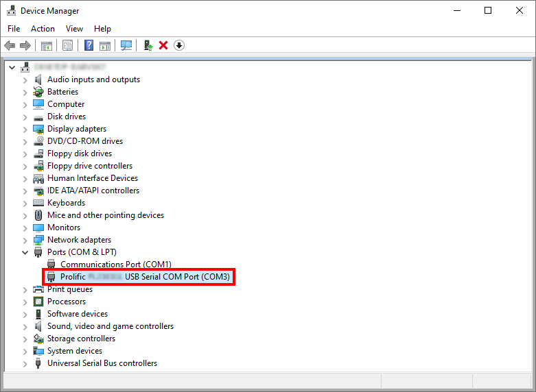

usbtemp-server
About
usbtemp-server is a simple server application that reads the temperature from a DS18B20-compatible, 1-Wire-connected USB thermometer and exposes that functionality as a HTTP JSON API.
This software is specifically written to support the thermometers sold by usbtemp.com, though — in theory — any DS18B20-compatible device should work. (this project is not sponsored by or is affiliated with usbtemp.com)
The software also serves an HTML page that continuously fetches the temperature from the server and
displays it.
It's designed to be used an OBS Browser Source.
(if you're a streamer, than this is what you're gonna be interested in)
Currently, the only operating systems which are supported are Linux-based systems and
Microsoft Windows.
There are no plans to add support for other operating systems.
Usage
Linux
Download the program from here.
After downloading and extracting the archive, execute
the file usbtemp-server.
The program takes no arguments.
$ ./usbtemp-serverWindows
Download the program from here.
After downloading and extracting the archive, execute
the file usbtemp-server.exe by double clicking it from the file explorer.
The program has no graphical interface, so the console window will open.
Update Check
The first thing the program will do is check for updates.
There are three possible outcomes:
-
The current version is up-to-date
Checking for updates... You're up-to-date -
A newer version is available
Checking for updates... An update is available! Download it here: release page URLAuto-update is currently not implemented, the new version must be manually downloaded.
-
An error occurred
Checking for updates... Failed to check for updates. Ignoring and moving on.
Device Selection
Next, the USB thermometer which is supposed to be used must be selected.
A thermometer device is identified by its port name.
Linux
The port name of a thermometer is the pathname of the thermometer's device file.
Since 1-Wire-connected devices are USB serial devices,
it can be one of /dev/ttyUSB0–/dev/ttyUSB255.
If no other USB serial devices are connected, it will be /dev/ttyUSB0.
(Linux kernel documentation on USB serial devices)
Windows
The port name can be one of COM0–COM9.
It will most likely be either COM3 or COM4.
Check the Device Manager for the actual name.
Example:

The program will try to detect any devices that are connected.
Again, there are three cases:
-
No devices detected
No USB thermometers detected. Enter the port name of the device to use: port nameIf no devices were detected, the port name must be entered manually.
Entering nothing will abort the program. -
One device detected
A USB thermometer on port port name, with the serial number serial number was detected. Do you want to use this device? [Y/n] answerIf one device was detected, the program prompts if the detected device should be used.
A yes/no answer is expected.
Any answer that starts with the letterYis seen as a yes answer.
Any other answer (excluding an empty answer) is seen as no.
The uppercaseYin the prompt indicates that yes is the default answer, i.e.: if nothing is entered.If yes is entered, the detected device will be used.
Otherwise, the program will prompt for the port name of a device.A USB thermometer on port port name, with the serial number serial number was detected. Do you want to use this device? [Y/n] n Enter the port name of the device to use: port nameEntering nothing will abort the program.
-
Multiple devices detected
The following USB thermometers were detected: * Port: port name #1 | Serial number: serial number #1 * Port: port name #2 | Serial number: serial number #2 * Port: port name #3 | Serial number: serial number #3 Enter the port name of the device to use: port nameIf multiple devices were detected, the port name must also be entered manually.
Entering nothing will abort the program.
After a device is selected, the program will display both the serial number of the USB thermometer and
the initially-read temperature in degree celsius.
Immediately afterwards, the HTTP server will start. It will listen on port 5000.
Linux
Serial number: serial number
Initial temperature: initial temperature°C
info: Microsoft.Hosting.Lifetime[14]
Now listening on: http://localhost:5000
info: Microsoft.Hosting.Lifetime[0]
Application started. Press Ctrl+C to shut down.
info: Microsoft.Hosting.Lifetime[0]
Hosting environment: Production
info: Microsoft.Hosting.Lifetime[0]
Content root path: pathname of the executable file's parent directoryTo stop the server and the program itself, send an interrupt signal. (Ctrl + C)
Windows
Serial number: serial number
Initial temperature: initial temperature°C
info: Microsoft.Hosting.Lifetime[14]
Now listening on: http://localhost:5000
info: Microsoft.Hosting.Lifetime[0]
Application started. Press Ctrl+C to shut down.
info: Microsoft.Hosting.Lifetime[0]
Hosting environment: Production
info: Microsoft.Hosting.Lifetime[0]
Content root path: path of the .exe file's parent folderTo stop the server and the program itself, press Ctrl + C while the console window is focused.
JSON API
(if you're a streamer and just want to use the HTML page as an OBS Browser Source, then you can skip this section)
An HTTP GET request on the path /temperature will read the temperature
from the selected USB thermometer.
The response body JSON object has the following schema:
{
"degreeCelsius": number
}
As is obvious from the property name, the value of the property degreeCelsius is
a decimal number representing the temperature in degree celsius.
The decimal point precision is whatever the thermometer device returns.
HTML Page
The server provides a static HTML page that continuously fetches the temperature from the server
and displays it in degree celsius.
The default interval between those updates is 5 seconds, though this can be configured.
This page is available at the path /overlay.html, which makes the full URL to access it
either http://127.0.0.1:5000/overlay.html or
http://localhost:5000/overlay.html.
Configuration
The page's default behavior can be changed via the URL query parameters.
To read more about URLs and the query parameters check out the page "What is a URL?" on the MDN Web Docs.
As previously stated, the default interval between updates of the temperature is 5 seconds.
This interval can be configured via the query parameter updateInterval,
which is in milliseconds.
Example: Using the URL http://127.0.0.1:5000/overlay.html?updateInterval=2500 would set
the interval duration to 2500 milliseconds, or 2.5 seconds.
The minimum interval can be 500 milliseconds and the maximum can be 999 999 999 milliseconds.
If the configured interval is less than or greater than these limits, then the value is "clamped"
and the respective limit is used instead.
How many decimal digits are displayed can also be configured.
By default, exactly one decimal digit is displayed, even if that digit is 0.
The query parameters to configure the amount of digits are
minDecimalDigits (for the minimum amount of decimal digits) and
maxDecimalDigits (for the maximum amount of digits).
If the actually recorded temperature's decimal digits are less than the configured minimum, then
the displayed temperature is padded out with zeros to fill that configured minimum.
If the actual temperature's decimal digits are more than the configured maximum, then
the displayed temperature's decimal digits are cut at that maximum.
Example: Using
the URL http://127.0.0.1:5000/overlay.html?minDecimalDigits=2&maxDecimalDigits=4 would
set the minimum decimal digits to 2 and the maximum digits to 4.
(e.g.: 28.00°C, 28.1234°C, 28.24°C, …)
The limits of the digit amounts is 0 and 20. Like with the update interval, if either
the configured minimum or maximum amounts are below or above these limits, they are clamped as well.
It is not possible to change the unit the temperature is displayed in.
Using the HTML Page in an OBS Browser Source
The HTML page is designed to be used in an OBS Browser Source.
Simply set the URL field to either http://127.0.0.1:5000/overlay.html or
http://localhost:5000/overlay.html.
Whichever you like more; both options are equivalent.

Virtual Thermometers
As the name suggests, virtual thermometers are "fake"
thermometer devices that can be used in place of real, physical USB thermometers.
They were added for development purposes, but can be used for testing in case physical devices
are not available for whatever reason.
To use a virtual thermometer, it must first be defined in a JSON file.
Linux
The pathname of the JSON file is
$XDG_CONFIG_HOME/usbtemp-server/virtual_devices.json.
As per the
XDG Base Directory Specification,
if the environment variable XDG_CONFIG_HOME is unset,
empty or is a relative pathname, then it is seen as invalid and the default value
of $HOME/.config is used instead.
If the environment variable HOME is not an absolute pathname, then the program will abort.
Windows
The path of the JSON file is
%LocalAppData%\Usbtemp Server\Config\virtual_devices.json, which
expanded should be
C:\Users\User\AppData\Local\Usbtemp Server\Config\virtual_devices.json
The file must be a JSON array of objects.
Each object must have the properties portName and serialNumber,
with the property enabled being optional.
The schema looks like this:
[
{
"portName": string,
"serialNumber": string,
"enabled"?: boolean
}
]The property names are pretty self-explanatory.
-
portName
The port name under which the virtual thermometer will be available.
The final name will actually have the prefix//virt/. -
serialNumber
The serial number must be defined as a hexadecimal (base-16) integer. -
enabled
If this property is set tofalse, then the virtual device is ignored.
It is effectively treated as though the entry doesn't exist in the first place.
[
{
"portName": "port name #1",
"serialNumber": "serial number #1",
},
{
"portName": "port name #2",
"serialNumber": "serial number #2",
"enabled": false
},
{
"portName": "port name #3",
"serialNumber": "serial number #3",
"enabled": true
}
]
Using a virtual thermometer works exactly like using physical ones.
Virtual ones will also always be detected.